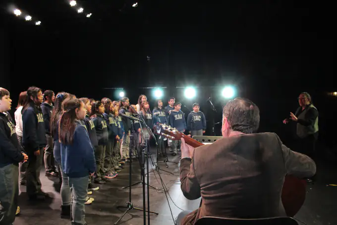

Horarios del Taller
Viernes (5º a 8º Básico)
13:40 a 15:00 hrs.

Sobre el Taller
El Coro de la Escuela de Artes y Cultura Osorno es un elenco artístico formativo integrado por estudiantes de 1° a 8° año básico, orientado al desarrollo de habilidades vocales, musicales y de trabajo colaborativo a través de la práctica coral. Con más de diez años de presencia en la escuela, el coro se ha consolidado como un espacio educativo y artístico que promueve la formación musical, la disciplina y la expresión artística desde la infancia.
Su repertorio aborda diversos estilos de la música coral, permitiendo a los estudiantes explorar distintos lenguajes musicales y desarrollar una experiencia interpretativa amplia y enriquecedora. De esta manera, el coro se proyecta como una instancia significativa de formación artística, encuentro y participación cultural, fortaleciendo el vínculo entre la educación musical y la comunidad.
El coro es dirigido desde sus inicios por la profesora Nedjelka Ruiz, quien cuenta con formación especializada en Metodología Kodály, enfoque pedagógico que promueve el aprendizaje musical a través del canto, el desarrollo auditivo y la comprensión progresiva del lenguaje musical.
A lo largo de su trayectoria, el coro ha participado en diversas instancias de formación y difusión musical, entre ellas el programa Puedes Cantar del Teatro del Lago, así como en encuentros corales a nivel nacional realizados en Osorno, Puerto Montt, Talca, Temuco y Santiago, en colaboración con la Fundación Ibáñez Atkinson y el programa Música Educa.
¿Qué aprenderás?
Afinación y escucha activa
Desarrollo de la capacidad de escuchar al conjunto, ajustar la voz y mantener la afinación dentro del grupo.
Ritmo y pulso musical
Comprensión y ejecución precisa del pulso, patrones rítmicos y coordinación colectiva.
Lectura musical inicial
Aproximación al lenguaje musical mediante patrones melódicos y rítmicos, fortaleciendo la comprensión de la notación.
Técnica vocal básica
Uso adecuado de la respiración, emisión de la voz, postura y cuidado vocal para una interpretación saludable.
Trabajo colaborativo
Desarrollo de habilidades sociales como la cooperación, la responsabilidad individual y el respeto.
Expresión e interpretación
Comprensión del carácter de las obras, expresión de emociones y desarrollo de la sensibilidad artística.
Beneficios del Canto Coral
La práctica coral aporta beneficios integrales para el desarrollo de los estudiantes.
Autoestima
Cantar en grupo fortalece la seguridad personal y la confianza en las propias capacidades vocales.
Disciplina
La práctica coral requiere constancia, atención y compromiso individual para el éxito colectivo.
Empatía
Escuchar y armonizar con otros desarrolla la sensibilidad hacia el grupo y el entorno.
Desarrollo Cognitivo
El aprendizaje musical estimula la memoria, la concentración y la coordinación neurmotora.
¿Te gustaría formar parte?
Si tienes interés en participar en el Taller de Coro, puedes contactar directamente a la profesora Nedjelka Ruiz o consultar en nuestra secretaría por los procesos de admisión.